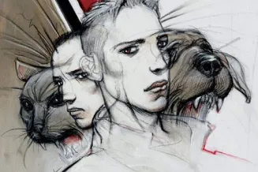

En 11 pages, Franck Pavloff raconte les mécanismes d’une société qui bascule dans un régime totalitaire et dystopique. Cet écrivain français publie cette nouvelle en 1998 en réaction à la situation politique du moment. Matin brun va rencontrer un succès international, avec environ deux millions d'exemplaires vendus en France et 25 traductions. Autant dire que toutes les civilisations se reconnaissent dans ce cauchemar absurde de Pavloff.
 Illustration de Matin Brun par Enki BilalPourtant, c’est dans un lieu et à une époque non précisés que se déroule l’action. Deux amis voient leurs habitudes perturbées avec l’arrivée d’un nouveau gouvernement qui édictent des lois imposant la couleur brune à tous les aspects de leur vie quotidienne. Cela commence avec les animaux de compagnie, les livres, les mots… avec des justifications officielles mais absurdes. A ces interdictions croissantes viennent s’ajouter les violences et les arrestations. Cette nouvelle est une référence directe aux chemises brunes du régime nazi. Aussi, elle démontre de façon générale le fonctionnement d’une dictature. Le danger est d’autant plus grand qu’il est silencieux et qu’il grignote peu à peu la vie tout entière.
Image extraite du spectacle Matin Brun par le Festival MOMIXEn effet, sous son aspect banal, cette nouvelle aborde des thèmes sombres tels que la censure, le mépris et la volonté de détruire ce qui est différent. Ainsi, le personnage principal et son ami Charlie obéissent à ces nouvelles règles. Cependant, au fond d’eux même, ils ressentent l’injustice et l’absurdité de ces obligations tout en se sentant coupables de détourner les yeux. Ce court récit démontre le rouleau compresseur silencieux du totalitarisme face à l'ignorance confortable des citoyens. Jusqu’à ce qu’il soit trop tard.
« Pour les chats, j'étais au courant. Le mois dernier, j'avais dû me débarrasser du mien, un de gouttière qui avait eu la mauvaise idée de naître blanc, taché de noir. C'est vrai que la surpopulation des chats devenait insupportable, et que d'après ce que les scientifiques de l'Etat national disaient, il valait mieux garder les bruns. Que des bruns. […] Après ça avait été au tour des livres de la bibliothèque, une histoire pas très claire, encore. Les maisons d'édition qui faisaient partie du même groupe financier que le Quotidien de la ville, étaient poursuivies en justice et leurs livres interdits de séjour sur les rayons des bibliothèques. Il est vrai que si on lisait bien ce que ces maisons d'édition continuaient de publier, on relevait le mot chien ou chat au moins une fois par volume, et sûrement pas toujours assorti du mot brun. Elles devaient bien le savoir tout de même. - Faut pas pousser, disait Charlie, tu comprends, la nation n'a rien à y gagner à accepter qu'on détourne la loi, et à jouer au chat et à la souris. Brune, il avait rajouté en regardant autour de lui, souris brune, au cas où on aurait surpris notre conversation. Par mesure de précaution, on avait pris l'habitude de rajouter brun ou brune à la fin des phrases ou après les mots. Au début, demander un pastis brun, ça nous avait fait drôle, puis après tout, le langage c'est fait pour évoluer et ce n'était pas plus étrange de donner dans le brun, que de rajouter " putain con ", à tout bout de champ, comme on le fait par chez nous. […] J'aurais dû me méfier des bruns dès qu'ils nous ont imposé leur première loi sur les animaux. Après tout, il était à moi mon chat, comme son chien pour Charlie, on aurait dû dire non. Résister davantage, mais comment ? Ça va si vite, il y a le boulot, les soucis de tous les jours. Les autres aussi baissent les bras pour être un peu tranquilles, non ? On frappe à la porte. Si tôt le matin, ça n'arrive jamais. J'ai peur. Le jour n'est pas levé, il fait encore brun au dehors.»